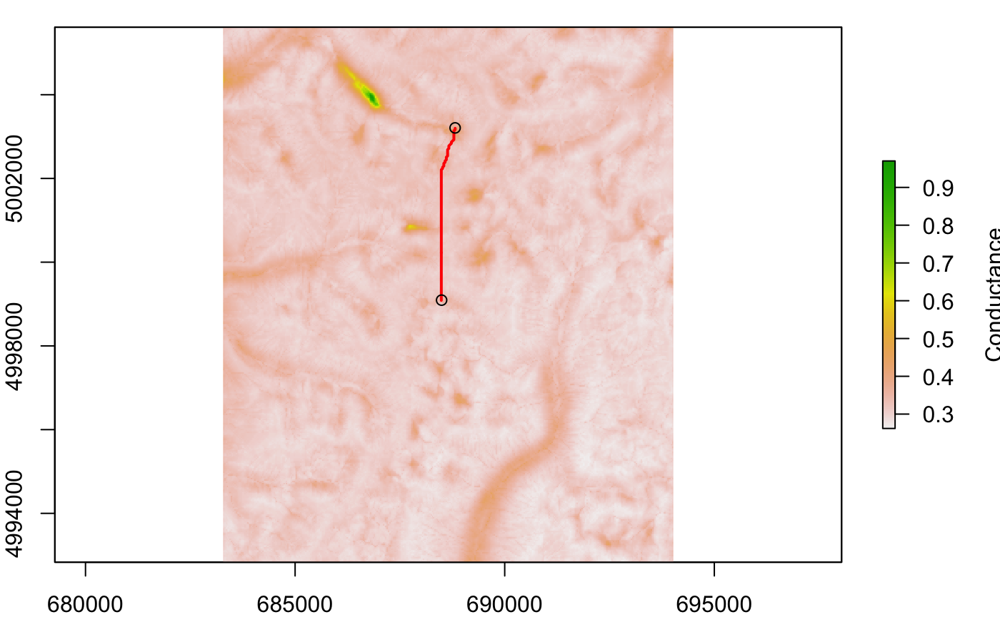
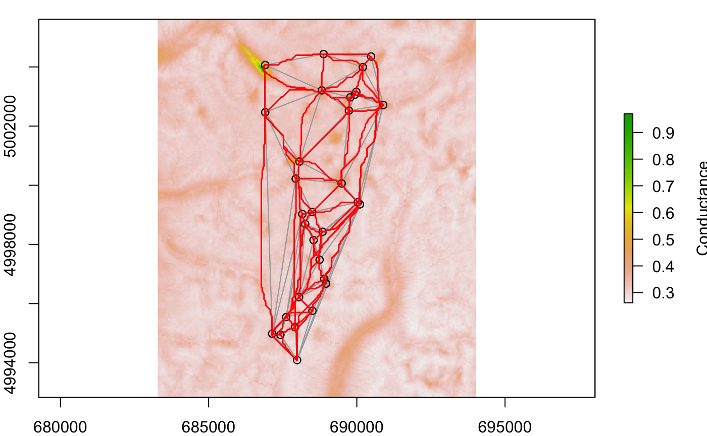
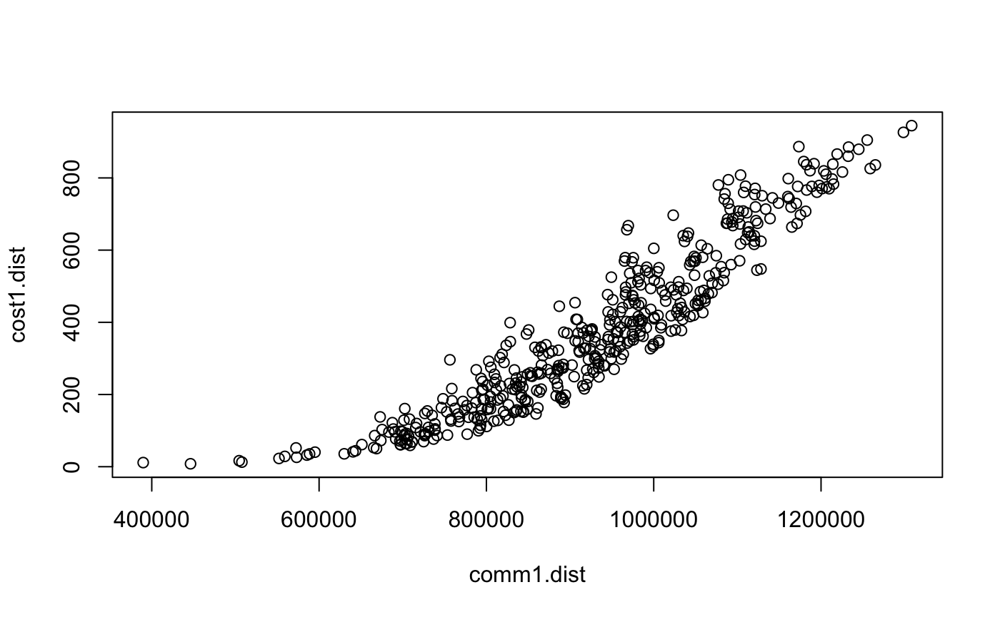
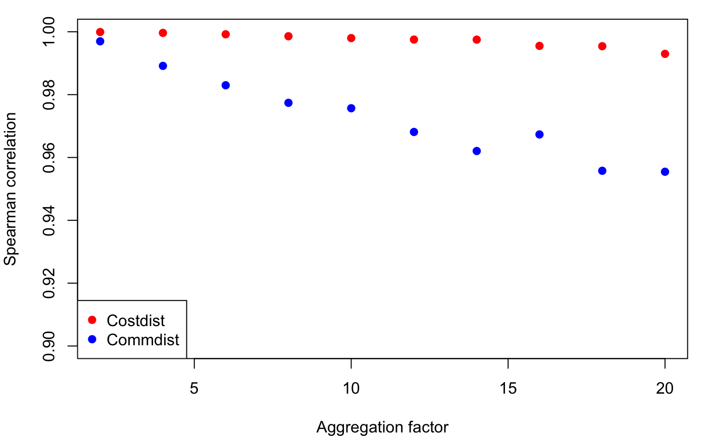

Week 10: Landscape Resistance
Melanie Murphy, Jeff Bowman, Robby Marrotte and Helene Wagner
2020-06-08
Week10_vignette.Rmd1. Overview of Worked Example
a) Goals
This worked example shows how to:
- Convert spatial data into weights (“costs”) based on different weighting approaches.
- Calculate landscape resistance using least-cost and commute time (analogous to circuit theory) approaches.
b) Data set
This code builds on the data from the ‘GeNetIt’ package by Jeff Evans and Melanie Murphy that we’ve used already in the Week 2 Worked Example. We will use spatial data from central Idaho for Columbia spotted frogs (Murphy et al. 2010).
Raster data: A raster is essentially a georeferenced matrix (i.e., a matrix with geographical co-ordinates). Here we’ll analyze raster data that are available in the ‘GeNetIt’ packages in the form of a SpatialPixelsDataFrame called ‘rasters’ (for meta data, type: ?GeNetIt::rasters). These data include classified Landsat land-cover data (NLCD), spline-based climate predictions (Rehfeldt et al. 2006), and topographically derived variables (Moore et al. 1993, Evans 1972). Landscape variables were selected based on knowledge of species’ ecology and previous research (Murphy et al. 2010, Pilliod et al. 2002, Funk et al. 2005):
- cti: Compound Topographic Index (“wetness”)
- err27: Elevation Relief Ratio
- ffp: Frost Free Period
- gsp: Growing Season Precipitation
- hli: Heat Load Index
- nlcd: USGS Landcover (categorical map)
Sampling locations: We will model landscape resistance between the ponds from which Colombia spotted frogs were sampled. The spatial coordinates and site data are available in the ‘GeNEtIt’ package in the form of a SpatialPointsDataFrame ‘ralu.site’. The slot @coords contains UTM coordinates (zone 11), and the slot @data contains 17 site variables for 31 sites. For meta data type: ?GeNetIt::ralu.site.
c) Required R libraries
All required packages should have been installed already when you installed ‘LandGenCourse’.
require(LandGenCourse) #require(GeNetIt) #require(raster) #require(gdistance)
d) Import rasters (gsp, err, cti, and ffp).
Here we load the raster data as a SpatialPixelsDataFrame and convert them in to a raster stack.
e) Import site data with sampling locations
In addition to spatial data, sample locations are also needed. Sample locations are located in the data folder (RALU_UTM.csv). Read in site locations (wetlands with Columbia spotted frogs).
data(ralu.site, package="GeNetIt") sites <- ralu.site
Question 1: What are UTMs and why might it be important to work in UTMs (as opposed to latitude and longitude)?
2. Explore the data set
Explore these rasters by plotting them. As you go through this exercise, use the plot function at each step to make sure your outputs “make sense”.

3. Setting cost values and calculating conductance
a) Resistance vs. conductance values
The next step involves creating cost categories from the continuous data. For the purposes of this exercise, a single “landscape resistance” cost surface will be created, based on merging the 4 variables, and employing expert opinion.
Rescaling the grids will take some processor time (depending on your computer).
First, use a relative ranking of the costs of the landscape variables based on expert opinion. Higher rank indicates more resistance as follows.
Landscape resistances:
1) err27, 2) ffp, 3) gsp, 4) ctiImportant considerations:
- The transition matrix in package ‘gdistance’ is based on conductance and not resistance.
- If we are going to create a single landscape resistance (i.e., add the costs together to create one synthetic landscape variable), costs need to represent relative importance of the variables.
Keep in mind there are a variety of approaches for creating landscape resistance values. This exercise implements one simplistic approach.
To create relative conductance values, reverse the rank order of the resistance values:
1) cti, 2) gsp, 3) ffp, 4) err27 b) As needed: Get all rasters at the same scale
Note: this step is not needed here as all rasters do already have the same resolution.
Originally, the topographic variables were calculated off a 10 m DEM. The climate variables are at a 30 m resolution. In order to calculate costs, all of the rasters need to have exactly the same resolution, dimensions, and co-ordinate locations (i.e., the cells need to match up perfectly. The method of resampling (bilinear vs nearest-neighbor) depends on the type of data. Nearest-neighbor is for categorical data whereas bilinear interpolation is for continuous data.
Here is some sample code to show how you would resample a raster ‘cti’ (assumed to have 10 m resolution) to the dimensions of a raster ‘gsp’ (with 30 m resolution):
#cti <- raster::resample(cti, gsp, method= "bilinear")
c) Calculate conductance values
Functions (e.g., 1/err, ffp/5) rescale the raw data from each raster to represent costs that correspond to perceived differences among variables arising from expert opinion. A wide variety of functions could be used to achieve a variety of cost structures in order to test alternative hypotheses. The err function is inverted compared to the other variables because the raw err data have low values relative to the other variables (< 1).
To use the below tools, conductance values must be calculated. First, look at the range of the variable in a given raster. Then apply a function to get the desired relative conductance values. Make sure to use the plot function and visually inspect your conductance surfaces.
RasterMaps$err27
## class : RasterLayer
## dimensions : 426, 358, 152508 (nrow, ncol, ncell)
## resolution : 30, 30 (x, y)
## extent : 683282.5, 694022.5, 4992833, 5005613 (xmin, xmax, ymin, ymax)
## crs : +proj=utm +zone=11 +datum=NAD83 +units=m +no_defs +ellps=GRS80 +towgs84=0,0,0
## source : memory
## names : err27
## values : 0.03906551, 0.7637643 (min, max)Elevation relief ratio (‘err27’) is identifying major topographic features. In this first case, the goal is for ‘err27’ to have the lowest conductance values compared to our other landscape variables. Greater ‘err27’ means more change in topography in a given area. So, the higher the value, the more resistance to a Columbian spotted frog. Note that the function below gives a linear relationship between the raw value and the cost. Any type of functional relationship could be used however.
err.cost <- (1/RasterMaps$err27) err.cost
## class : RasterLayer
## dimensions : 426, 358, 152508 (nrow, ncol, ncell)
## resolution : 30, 30 (x, y)
## extent : 683282.5, 694022.5, 4992833, 5005613 (xmin, xmax, ymin, ymax)
## crs : +proj=utm +zone=11 +datum=NAD83 +units=m +no_defs +ellps=GRS80 +towgs84=0,0,0
## source : memory
## names : err27
## values : 1.309305, 25.59803 (min, max)RasterMaps$ffp
## class : RasterLayer
## dimensions : 426, 358, 152508 (nrow, ncol, ncell)
## resolution : 30, 30 (x, y)
## extent : 683282.5, 694022.5, 4992833, 5005613 (xmin, xmax, ymin, ymax)
## crs : +proj=utm +zone=11 +datum=NAD83 +units=m +no_defs +ellps=GRS80 +towgs84=0,0,0
## source : memory
## names : ffp
## values : 0, 51 (min, max)ffp.cost <- (RasterMaps$ffp/5) ffp.cost
## class : RasterLayer
## dimensions : 426, 358, 152508 (nrow, ncol, ncell)
## resolution : 30, 30 (x, y)
## extent : 683282.5, 694022.5, 4992833, 5005613 (xmin, xmax, ymin, ymax)
## crs : +proj=utm +zone=11 +datum=NAD83 +units=m +no_defs +ellps=GRS80 +towgs84=0,0,0
## source : memory
## names : ffp
## values : 0, 10.2 (min, max)RasterMaps$gsp
## class : RasterLayer
## dimensions : 426, 358, 152508 (nrow, ncol, ncell)
## resolution : 30, 30 (x, y)
## extent : 683282.5, 694022.5, 4992833, 5005613 (xmin, xmax, ymin, ymax)
## crs : +proj=utm +zone=11 +datum=NAD83 +units=m +no_defs +ellps=GRS80 +towgs84=0,0,0
## source : memory
## names : gsp
## values : 227, 338.0697 (min, max)gsp.cost <- (RasterMaps$gsp-196)/15 gsp.cost
## class : RasterLayer
## dimensions : 426, 358, 152508 (nrow, ncol, ncell)
## resolution : 30, 30 (x, y)
## extent : 683282.5, 694022.5, 4992833, 5005613 (xmin, xmax, ymin, ymax)
## crs : +proj=utm +zone=11 +datum=NAD83 +units=m +no_defs +ellps=GRS80 +towgs84=0,0,0
## source : memory
## names : gsp
## values : 2.066667, 9.471311 (min, max)RasterMaps$cti
## class : RasterLayer
## dimensions : 426, 358, 152508 (nrow, ncol, ncell)
## resolution : 30, 30 (x, y)
## extent : 683282.5, 694022.5, 4992833, 5005613 (xmin, xmax, ymin, ymax)
## crs : +proj=utm +zone=11 +datum=NAD83 +units=m +no_defs +ellps=GRS80 +towgs84=0,0,0
## source : memory
## names : cti
## values : 0.8429851, 23.71476 (min, max)cti.cost <- RasterMaps$cti/5 cti.cost
## class : RasterLayer
## dimensions : 426, 358, 152508 (nrow, ncol, ncell)
## resolution : 30, 30 (x, y)
## extent : 683282.5, 694022.5, 4992833, 5005613 (xmin, xmax, ymin, ymax)
## crs : +proj=utm +zone=11 +datum=NAD83 +units=m +no_defs +ellps=GRS80 +towgs84=0,0,0
## source : memory
## names : cti
## values : 0.168597, 4.742952 (min, max)d) Create a single landscape conductance raster
Testing variables independently may be more appropriate depending on the research question but for the purposes of today’s lab, a single conductance raster will be employed.
cost1 <- (gsp.cost + cti.cost + err.cost + ffp.cost) cost1
## class : RasterLayer
## dimensions : 426, 358, 152508 (nrow, ncol, ncell)
## resolution : 30, 30 (x, y)
## extent : 683282.5, 694022.5, 4992833, 5005613 (xmin, xmax, ymin, ymax)
## crs : +proj=utm +zone=11 +datum=NAD83 +units=m +no_defs +ellps=GRS80 +towgs84=0,0,0
## source : memory
## names : layer
## values : 9.012874, 35.90095 (min, max)Question 2: Plot your cost surface with your sample locations on top. What does this tell you?
4. Convert conductance into effective distance
The higher the conductance, the lower the cost or resistance of a cell, and vice versa. We want to integrate conductance across cells to derive some measure of effective (or ecological) distance.
a) Create a transition layer
Transition layers are constructed from a raster, and they take the geographic references (projection, resolution, extent) from the original raster object. They also contain a matrix of probability of movement between cells which can be interpreted as “conductance”. Each cell in the matrix represents a cell in the original raster object.
The first step is to construct a transition object based on ‘cost1’ (which is a conductance layer as calculated). This step is computationally intensive and make take a few minutes to run.
Connections can be set based on 4, 8, or 16 neighbor rules. A value of 8 connects all adjacent cells in 8 directions.
tr.cost1 <- gdistance::transition(cost1, transitionFunction=mean, directions=8) tr.cost1
## class : TransitionLayer
## dimensions : 426, 358, 152508 (nrow, ncol, ncell)
## resolution : 30, 30 (x, y)
## extent : 683282.5, 694022.5, 4992833, 5005613 (xmin, xmax, ymin, ymax)
## crs : +proj=utm +zone=11 +datum=NAD83 +units=m +no_defs +ellps=GRS80 +towgs84=0,0,0
## values : conductance
## matrix class: dsCMatrixc) Correct for geometric distortion
Transition values are calculated based on values of adjacent cells in the cost raster. However, we used an 8 neighbor rule and the center of diagonally connected raster cells are farther apart from each other than the orthogonally connected cells. We are using UTM co-ordinates; however, in lat-long projections, cell sizes become smaller as you move poleward.
Values of the matrix have to be corrected for the first type of distortion for our analysis (and we would need to correct for the second type of distortion if we were using lat-longs).
tr.cost1 <- gdistance::geoCorrection(tr.cost1,type = "c",multpl=FALSE)
d) Plot shortest paths in space
Here we do the following:
- Plot site locations on top of conductance raster ‘tr.cost1’
- Calculate ‘AtoB’ as the shortest path (least cost path) between sites 1 and 2
- Plot the shortest path onto the map
Note: the path is stored as a ‘SpatialLines’ object (package ‘spdep’). A path is a sequence of coordinate pairs, which is stored in the @lines slot. Like a ‘SpatialPointsDataFrame’, a ‘SpatialLines’ object has a ‘proje4string’ attribute that stores the projection information. This means that we can easily plot it on top of a raster map.
par(mar=c(2,2,1,2)) AtoB <- gdistance::shortestPath(tr.cost1, origin=sites[1,], goal=sites[2,], output="SpatialLines") raster::plot(raster::raster(tr.cost1), xlab="x coordinate (m)", ylab="y coordinate (m)",legend.lab="Conductance") lines(AtoB, col="red", lwd=2) points(sites[1:2,])

That’s nice, but it shows only the shortest path between sites 1 and 2. It would not be very useful to plot all pairwise shortest paths. Here we do the following:
- Plot site locations on top of conductance raster ‘tr.cost1’
- Use Delaunay triangulation to define neighbors (we want to retain only those paths that won’t cross each other, though they may merge)
- Plot grey lines between neighbours
- For each unique pair of neighbours, calculate ‘AtoB’ as the shortest path
- Plot the shortest paths onto the map in red
Note: this may take a while. If it does not show up nicely in the notebook, copy and paste the code to the console and watch how the plot is evolving in the Plots tab (nothing beats being able to actually watch R do the work for you).
par(mar=c(2,2,1,2)) raster::plot(raster::raster(tr.cost1), xlab="x coordinate (m)", ylab="y coordinate (m)", legend.lab="Conductance") points(sites) Neighbours <- spdep::tri2nb(sites@coords, row.names = sites$SiteName) plot(Neighbours, sites@coords, col="darkgrey", add=TRUE) for(i in 1:length(Neighbours)) { for(j in Neighbours[[i]][Neighbours[[i]] > i]) { AtoB <- gdistance::shortestPath(tr.cost1, origin=sites[i,], goal=sites[j,], output="SpatialLines") lines(AtoB, col="red", lwd=1.5) } }

Question 3: Do the shortest paths (red) deviate from the Euclidean distances (grey)? Why?
Question 4: Are there paths that merge? How would you explain this?
5. Create cost-distance matrices
a) Least cost distance
The cost-distance matrix is based on the corrected transition layer and the site locations (here we supply a ‘SpatialPointsDataFrame’ object). The ‘costDistance’ function requires conductance values, even though cost distance will be 1/conductance (i.e., resistance). The cost distance is a function of the transition (tr.cost1, a transition object) and spatial locations (sites, a spatial object). This is a single least-cost path (accumulated cost units as opposed to length units) between each pair of sites..
cost1.dist <- gdistance::costDistance(tr.cost1,sites)
b) Cost-distance matrix based on random paths (similar to Circuitscape)
Commute-time distance is an alternative to effective resistance from circuit theory. Commute-time is the expected time it takes for a random walk between nodes, and has been shown to correlate highly with effective resistance (Marrotte and Bowman 2017).
comm1.dist <- gdistance::commuteDistance(x = tr.cost1, coords = sites)
c) Compare cost distances
Create a distance table to compare different cost distance estimates:
dist_df <- data.frame("cost1.dist"=as.numeric(cost1.dist), "comm1.dist"=as.numeric(comm1.dist))
Look at the correlation between the two different cost distances:
corr.LCD.comm <- cor(dist_df$cost1.dist, dist_df$comm1.dist, method = "spearman") corr.LCD.comm
## [1] 0.9519704plot(cost1.dist~comm1.dist)

Question 5: Are the distance measures similar or different? Why?
Question 6: What is the major difference? What are the implications of this difference? When might you use one or other of the methods?
6. How does changing resolution affect these metrics?
Create a loop that runs through a sequential coarsening of the raster and calculate these metrics and compare them to the finer resolution raster metric using a Spearman correlation. The loop will take a few minutes to run.
a) Create loop
cor_cost <- c() cor_comm <- c() res_fact <- seq(2,20,2) for(fac in res_fact){ cost1_agg <- raster::aggregate(cost1, fact = fac) tr.cost_agg <- gdistance::transition(cost1_agg, transitionFunction=mean, directions=8) tr.cost_agg <- gdistance::geoCorrection(tr.cost_agg,type = "c",multpl=FALSE) cost.dist_agg <- gdistance::costDistance(tr.cost_agg,sites) comm.dist_agg <- gdistance::commuteDistance(x = tr.cost_agg, coords = sites) cost.dist_agg <- as.numeric(cost.dist_agg) comm.dist_agg <- as.numeric(comm.dist_agg) cor_cost <- c(cor_cost,cor(dist_df$cost1.dist, cost.dist_agg, method = "spearman")) cor_comm <- c(cor_comm,cor(dist_df$comm1.dist, comm.dist_agg, method = "spearman")) }
b) Plot the results
par(mar=c(4,4,1,1)) plot(y = cor_cost, x = res_fact, col = "red", pch = 19, ylim = c(0.9,1), xlab = "Aggregation factor", ylab = "Spearman correlation") points(y = cor_comm, x = res_fact, col = "blue", pch = 19) legend("bottomleft", legend = c("Costdist","Commdist"), pch = 19, col = c("red", "blue"))

Question 7: What effect does changing resolution have on these metrics?
7. References
Evans IS (1972) General geomorphometry, derivatives of altitude, and descriptive statistics. In: Chorley RJ (ed) Spatial analysis in geomorphology. Harper & Row, New York.
Funk WC, Blouin MS, Corn PS, Maxell BA, Pilliod DS, Amish S, Allendorf FW (2005) Population structure of Columbia spotted frogs (Rana luteiventris) is strongly affected by the landscape. Mol Ecol 14(2): 483-496
Marrotte RR, Bowman J (2017) The relationship between least-cost and resistance distance. PLOS ONE 12(3): e0174212
McRae BH, Dickson BG, Keitt TH, Shah VB (2008) Using circuit theory to model connectivity in ecology, evolution, and conservation. Ecology 89 (10):2712-2724
Moore I, Gessler P, Nielsen G, Petersen G (eds) (1993) Terrain attributes and estimation methods and scale effects. Modeling change in environmental systems. Wiley, London.
Murphy MA, Dezanni RJ, Pilliod D, Storfer A (2010) Landscape genetics of high mountain frog populations. Mol Ecol 19:3634-3649.
Pilliod DS, Peterson CR, Ritson PI (2002) Seasonal migration of Columbia spotted frogs (Rana luteiventris) among complementary resources in a high mountain basin. Can J Zool 80: 1849-1862
Rehfeldt GE, Crookston NL, Warwell MV, Evans JS (2006) Empirical analysis of plan-climate relationships for western United States. International Journal of Plan Sciences 167: 1123-1150